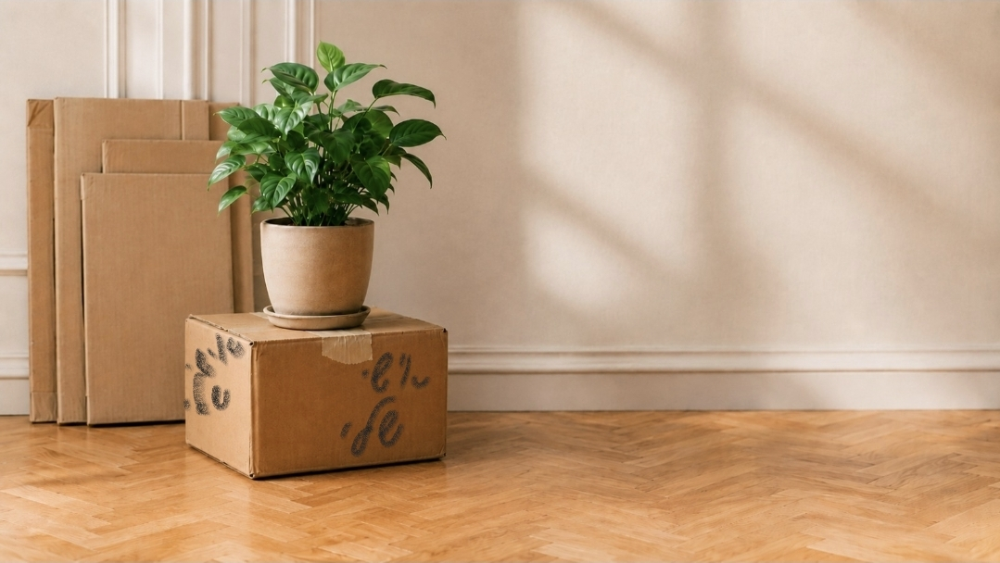

מרחב לנשים ברילוקיישן שרוצות לבנות מחדש זהות, קריירה ומשמעות – בלי לוותר על עצמן.
בלי מחויבות. רק כדי שתהיי בין הראשונות לדעת.
אם משהו מהמשפטים האלה נשמע מוכר – את לא היחידה שמרגישה כך, ואת בהחלט לא לבד.

רילוקיישן הוא לא רק שינוי כתובת. הוא מערער כל מה שהיה ברור — התפקיד, המסגרת, המעמד, ההכרה — ומחייב אותך לבנות את כל זה מחדש, כל פעם מאפס, במקום שעדיין לא מכיר אותך.
זו הסיבה שהתקופה הזו מורגשת כל כך מאתגרת. ולא במקרה היא גם הזדמנות נדירה: ברוב החיים אנחנו ממשיכות מסלול שכבר התחיל. כאן, לרגע, הכול פתוח לעיצוב מחדש.
השאלה היא לא איך לחזור למי שהיית. השאלה היא מי את רוצה להיות בפרק הבא — ואיך בונים את זה בכוונה, ולא רק כתגובה לנסיבות.
רילוקיישן משנה הרבה דברים, אבל הוא גם יוצר הזדמנות לעצור, לדייק ולבנות מחדש חלקים בחיים. לא כדי לחזור למי שהיית – אלא כדי ליצור פרק חדש שמתאים למי שאת היום.
לקום בבוקר עם יותר בהירות לגבי הכיוון המקצועי והאישי שלך.
להרגיש שוב ביטחון ביכולות ובחוזקות שלך.
לבנות שגרה וחיים שמרגישים שלך, לא רק של המשפחה.
ליצור קשרים, שייכות ותחושת בית במקום החדש.
לקבל החלטות מתוך בחירה ולא רק מתוך תגובה לנסיבות.
להרגיש שאת לא רק הסתגלת למעבר – אלא באמת יצרת לעצמך חיים חדשים.
לא כל התשובות מגיעות מיד. אבל בתוך תקופת מעבר אפשר להתחיל לבנות מחדש עוגנים של זהות, כיוון ומשמעות – ולצאת עם בהירות גדולה יותר לגבי החיים שאת רוצה ליצור מכאן.
לצאת עם הבנה ברורה יותר של מי שאת היום, מה חשוב לך עכשיו, ולאן את רוצה להמשיך מכאן.
לקבל החלטות מתוך בחירה מודעת, גם כשהעתיד עדיין לא לגמרי ברור.
לבנות כיוון מקצועי שמתאים לחיים שאת חיה היום, ולא לנסות לחזור בהכרח לחיים שהשארת מאחור.
להיזכר בחוזקות, בניסיון וביכולות שכבר קיימים בך – גם אם בתקופה האחרונה היה קשה לראות אותם.
לבנות שגרה וחיים שמאפשרים מקום לרצונות, לשאיפות ולצרכים שלך – לא רק לצרכים של כולם סביבך.
להתחיל ליצור תחושת בית, קהילה ושייכות במקום החדש, בדרך שמתאימה לך.
דריה אליאס
לפני שהתחלתי ללוות נשים בתקופות מעבר, עברתי לא מעט כאלה בעצמי.
במשך שנים בניתי קריירה בעולם הטכנולוגיה וניהלתי מוצרים וצוותים בחברות גלובליות. ואז עברנו לארצות הברית בעקבות הקריירה של בן זוגי – מעבר שדרש ממני לעצור לרגע את המסלול המקצועי שבניתי, ולהתחיל לשאול שאלות חדשות על זהות, משמעות והמשך הדרך.
לצד ההתרגשות וההזדמנויות, גיליתי עד כמה מעבר למדינה חדשה יכול לערער תחושת זהות, שייכות וכיוון. מצאתי את עצמי שואלת שאלות שלא עסקתי בהן שנים: מי אני היום? מה חשוב לי עכשיו? ואיך אני רוצה שייראה הפרק הבא בחיי?
לפני שחזרנו לישראל, יצאנו להרפתקה משפחתית של כמעט שנתיים בקאריביים. להפתעתי, דווקא החזרה לארץ חידדה עבורי שגם רילוקיישן חוזר הוא מעבר משמעותי, שמביא איתו שאלות, אתגרים – וגם הזדמנות לבנייה מחדש.
היום, לצד ייעוץ בניהול מוצר לחברות תוכנה, אני מלווה כמאמנת מוסמכת א.נשים בתהליכי שינוי, צמיחה ודיוק אישי. אני מאמינה שמעברים גדולים, למרות הטלטלה שהם מביאים איתם, יכולים להפוך להזדמנות לעצור, לדייק ולבנות מחדש חיים שמתאימים למי שאנחנו היום.
אם משהו במה שקראת נגע בך, אפשר לקבל עדכון כשהמחזור הראשון ייפתח.
לפעמים שיחה אחת היא בדיוק המקום שממנו מתחילים,
ואם את מעדיפה להמשיך איתי את השיחה? אני כאן
אעדכן אותך כשיהיה משהו חדש לשתף, ותהיי בין הראשונות לשמוע כשהמחזור הראשון של ״מעבר״ ייפתח.
לנשים ישראליות שעברו, עוברות או חוזרות מרילוקיישן בעקבות הקריירה של הפרטנר, ומרגישות שהן רוצות לבנות מחדש זהות, כיוון מקצועי ותחושת משמעות – לא רק "להסתדר" במקום החדש.
כן. אם את כבר יודעת שרילוקיישן בדרך, זה בדיוק הזמן להתחיל לחשוב גם עלייך – לא רק על הלוגיסטיקה של המעבר.
בהחלט. החזרה ארצה היא לא פחות מעבר מהיציאה, ולעיתים מביאה איתה את אותן שאלות בדיוק: מי אני עכשיו, ומה הפרק הבא שלי כאן.
לא. רוב הנשים שאני פוגשת מתחילות בלי תשובה ברורה – וזה בסדר. התהליך נועד בדיוק בשביל זה: לעזור לך להבהיר מה כן.
התוכנית עוד בבנייה, ואני בונה אותה מתוך שיח עם נשים כמוך. מי שנרשמת לרשימת ההמתנה תהיה הראשונה לדעת – ותהיה לה גם השפעה ישירה על האופן שבו התוכנית תיראה בסוף.